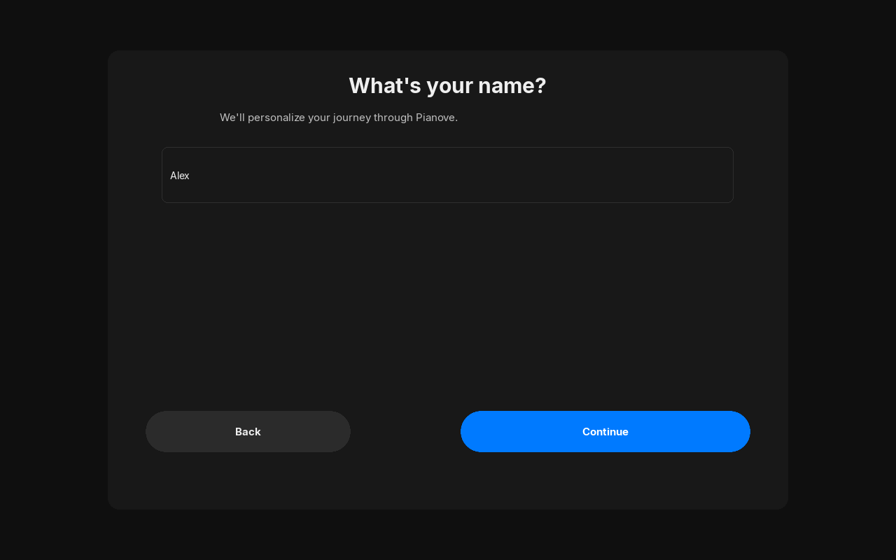
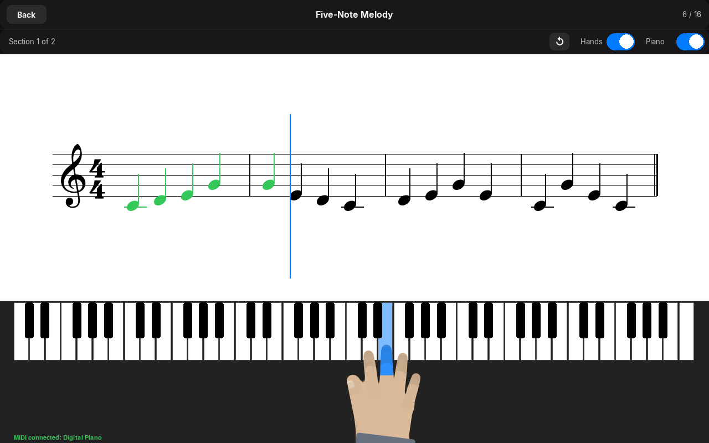

Getting Started
Quick Start
From a fresh clone to your first lesson in five minutes.
1. Install
You need Python 3.10 or newer. Clone the repository and install the dependencies:
git clone https://github.com/MariusAngermann08/Pianove.git
cd Pianove
pip install -r requirements.txtbin/; on macOS and Linux install it with your package manager (brew install fluid-synth, sudo apt install libfluidsynth3). Details in Installation.2. Launch and set up
python main.pyOn the first start a short setup asks for your language, your name and how much piano you have played, and then looks for your keyboard. Plug in a USB MIDI keyboard and press a key, or choose Acoustic piano? Use the microphone instead. You can also skip this and connect later.


3. Find your way around
After the setup you land on Home. The sidebar holds the four main areas: Home, Songs, Lessons and Practice, plus Settings at the bottom. With Creator Mode switched on, a fifth tab, Create, appears.

4. Play your first lesson
- On Home, press Continue, or open Lessons → Beginner Path and start Welcome to Pianove.
- The lesson first explains the idea in a few short animated screens. Read, listen, and play the keys it asks for.
- Then you play the piece from the staff. The key to play next is lit on the on-screen keyboard; the music waits for you.
- After each section comes the final performance: the whole piece in tempo, after a count-in.

5. Learn a song of your own
Open Songs, press + and pick a MusicXML file (.musicxml, .xml or .mxl). The repository includes one to try: waltz-in-a-minorchopin.mxl. Press Practice and Pianove builds a learning path that takes you from the first bars to the whole piece.
Where to go next: Songs & Learning Path, Keyboard & Microphone, Settings.